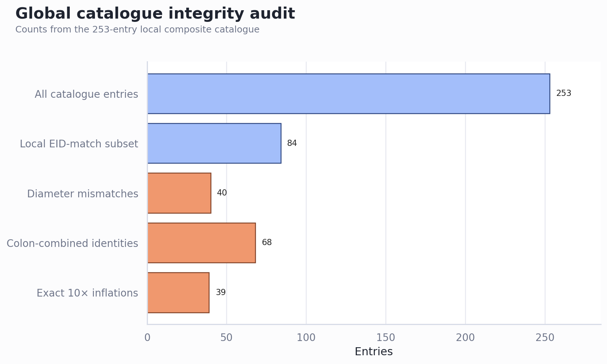
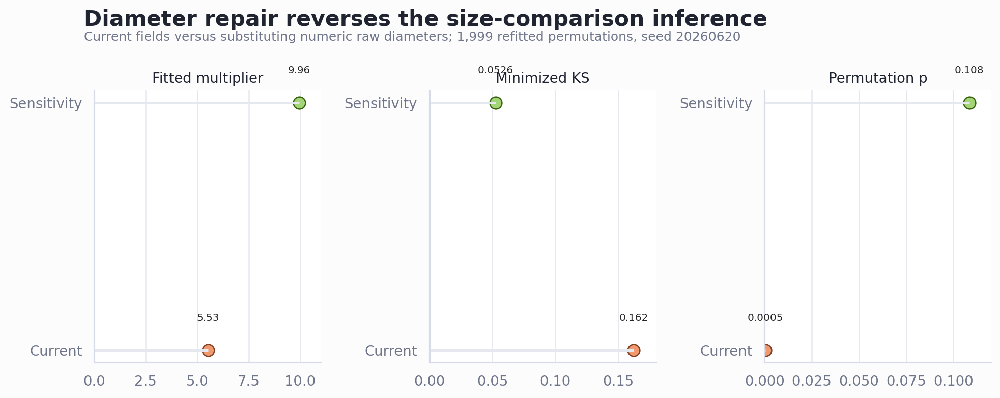
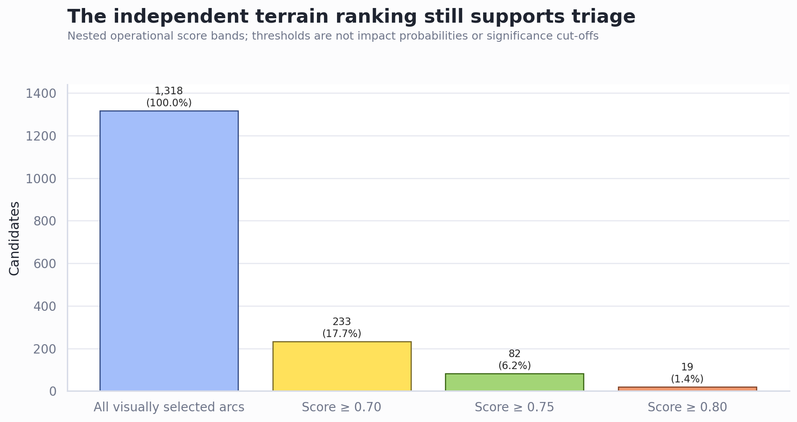

Astrobleme study: decision report
Catalogue integrity, surviving evidence and the fastest path to a defensible manuscript · June 20, 2026
Executive Summary
- Pause the manuscript’s global size-distribution conclusions. Forty of 253 catalogue entries have numeric diameter fields that disagree; 39 are exact tenfold inflations. The defect affects 36 of 84 locally EID-matched entries.
- The current headline inference reverses under a simple sensitivity repair. Substituting numeric raw diameters changes the fitted multiplier from 5.53 to 9.96, the minimized KS statistic from 0.162 to 0.053, and the permutation p-value from 0.0005 to 0.1085. This sensitivity is not a final corrected analysis, but it proves the existing claim is unstable.
- Preserve the GEBCO ranking as an exploratory screening result. Its calculations do not use the defective global diameter field. It yields 82 candidates above 0.75 and 19 above 0.80, but its scores remain uncalibrated and known volcanic structures rank highly.
- Focus first on catalogue reconstruction and automated integrity tests. Then rerun every dependent analysis, update the manuscript, and only afterward invest in imagery, geophysical enrichment and candidate field prioritisation.
The catalogue defect reaches the core comparison
The issue is systematic rather than a handful of outliers: 40 entries (15.8%) have conflicting numeric diameter fields, including 36 locally EID-matched records. Separately, 68 display identities (26.9%) are colon-combined; 16 fall inside the EID-labelled subset. Some are legitimate aliases, while others expose unresolved name-to-coordinate associations. Both fields must be reconstructed from provenance rather than patched by appearance alone.

A minimal repair changes the scientific answer
The current manuscript reports that a fitted multiplier of 5.53 does not reconcile the distributions. A controlled sensitivity run using the numeric raw diameter wherever it conflicts instead produces a multiplier of 9.96 and no significant shape difference at the same 1,999-permutation resolution (p=0.1085). An exact-tenfold-only repair gives nearly the same result (scale 9.85, KS 0.053, p=0.104). The analysis therefore cannot currently reject a near-tenfold relation.

Implication: the abstract, results, discussion and conclusion must not retain the current 5.53/KS/p-value narrative. The power-law tail estimates are also affected and need complete regeneration.
Some work survives, but its claims must stay narrow
The independent terrain-ranking pipeline remains useful for prioritising visual review because it derives from the 1,318 arcuate geometries, GEBCO elevation and broad geological-province boundaries. It does not validate impact origin, and score thresholds are workflow bands rather than probabilities.

| Evidence block | Decision | Reason |
|---|---|---|
| Inventory counts and grains | Retain | Raw counts and African deduplication are reproducible. |
| GEBCO candidate ranking | Retain as screening | Independent of global diameter fields; provisional and uncalibrated. |
| Spatial null framework | Retain method; rerun | Distances do not use diameter, but catalogue identities and EID labels need audit. |
| Global size distributions | Withdraw pending repair | 40 diameter mismatches materially change fitted scale and KS inference. |
| Impact interpretation | Not established | Morphology and broad geology cannot verify impact origin. |
The main drivers are provenance, selection and non-unique morphology
- Import logic dominates the size result. The sensitivity shift is much larger than any reasonable interpretive nuance.
- Catalogue construction affects the spatial result. Centre distances are independent of diameter, but unresolved identities and local EID labels mean the nulls should be rerun after row reconstruction.
- Visual selection builds circularity into the source data. Most arcs are near-perfect circles by construction, so morphology cannot serve as independent confirmation.
- Endogenic structures are strong competitors. Circular volcanic seamounts rank highly; Anton Dohrn is an explicit negative control supported by the JNCC and regional volcanic-centre context from the British Geological Survey.
Recommended Next Steps
- Freeze affected claims immediately. Mark size-distribution, fitted-scale, tail-exponent and EID-subset spatial conclusions as pending data repair.
- Reconstruct the 253-row catalogue from provenance. Resolve name, coordinate, diameter, source and EID status with persistent row identifiers. Do not overwrite the current file.
- Add integrity tests before rerunning. Test numeric raw/parsed diameter agreement, plausible diameter bounds, unique identity mapping, coordinate-title joins, duplicate structures and status provenance.
- Rerun all dependent outputs. Regenerate `analysis_results.json`, tables, figures and every numerical statement in the manuscript. Report before/after diffs.
- Then calibrate the terrain ranking. Consolidate overlapping candidates, run matched spatial/radius nulls, create confirmed-impact and endogenic control sets, and add imagery plus independent geophysics.
Further Questions
- Where is the original catalogue-construction script or acquisition snapshot that produced the global GeoJSON?
- Which dated authoritative source should control EID membership and structure diameter?
- Should the manuscript retain the size-scaling hypothesis as an open test if a corrected rerun remains non-significant?
- Which geological controls and geophysical datasets should define advancement beyond morphology-only screening?
Caveats and Assumptions
The repaired scenario substitutes numeric raw values only to measure sensitivity. It does not resolve incorrect raw values, aliases, coordinate provenance or catalogue status. The spatial null code and terrain ranking were not altered in this report. Geological confirmation still requires accepted shock-metamorphic, meteoritic or geochemical evidence; neither circularity nor a high follow-up score is diagnostic.